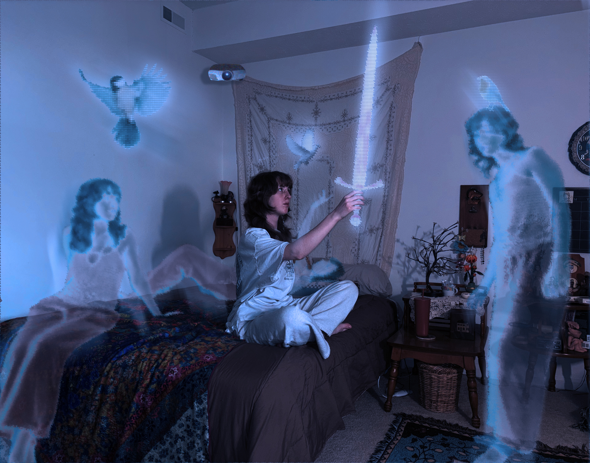

Sci-Fi World
March 29, 2025
Adobe Photoshop, iPhone camera
This project directs itself to a specific aspect of my imagined Futuristic World. I’ve acquired inspiration from our contemporary development of virtual worlds and the interactions we have with them today. Currently, in order to view and interact with a virtual world, one would need the use of a screen. Holograms may present a virtual world, but we cannot physically interact with one. Combining these two products together, I’ve conceptualized a world in which interactive virtual reality may be projected into real environments. Maybe these virtual worlds would be customizable. As birds are my current obsession, I would love to generate them into my room. And, of course, who wouldn’t want to use a sword? Using images from the web, I photoshopped these items to make it appear as though I was interacting with them. I was also fond of the idea of interacting with friends face-to-face, no matter the location. Using images of myself, I photoshopped in virtual avatars that could also interact with the real environment. I tried to create a more “virtual” look by heavily filtering each of these items & avatars with distortions, blurs, and color edits. And finally, a projector device was added to explain the manifestation of virtual objects.